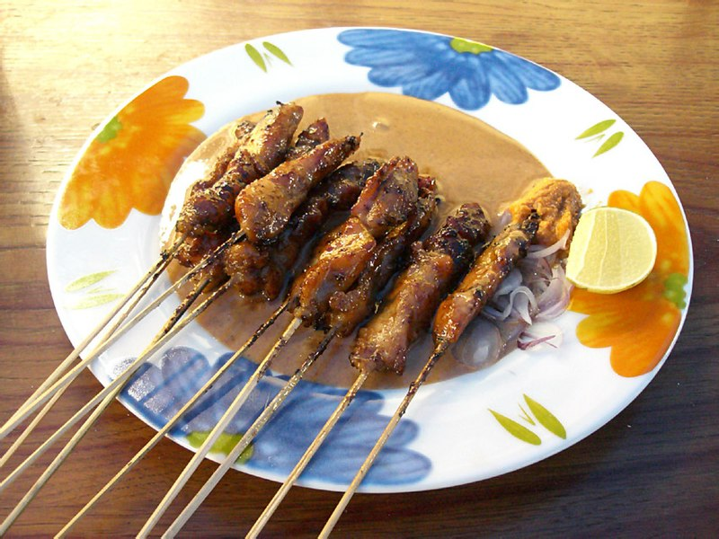

Chicken Satay

Description
Satay, or sate in Indonesian spelling, is a Southeast Asian dish of seasoned, skewered and grilled meat, served with a sauce.
Ingredients
- Chicken meat
- Salt and MSG
- Sweet Ketchup
- Peanuts
- Cooking oil
Steps
- Small cut the meat, put it in skewers
- Grill on charcoal until done
- Crush the peanuts and mix it with Salt and MSG, Sweet Kecthup, and a bit of cooking oil until becoming sauce
- Eat the chicken with the sauce on top